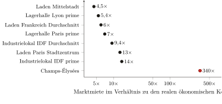
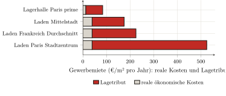

— KI-Übersetzung — Claude Fable 5 (Anthropic)
Dritter Teil — Empirische Messung der Abschöpfung · Kapitel 10
10 Die Gewerberente und die Produktionskette: der Arbeiter
Das vorige Kapitel hat den Tribut gemessen, den der Bewohner direkt entrichtet, in seiner Miete: 126 Milliarden. Aber der Bewohner ist auch Arbeiter und Konsument, und auf diesem zweiten Weg erreicht ihn der Tribut ein weiteres Mal, indirekt und meist ohne sein Wissen. Der Händler, der verkauft, der Industrielle, der produziert, das Lager, das Waren hält, entrichten ebenfalls eine Miete auf die Mauern, die sie belegen; und diese Miete tragen sie nicht: sie wälzen sie stromabwärts ab, in den Preis der Waren, bis zum Endverbraucher. Das ist der Mechanismus, den Kapitel 5 dem Recht nach aufgestellt hat1 und der jetzt zu beziffern ist. Wir messen zunächst diese Gewerberente; dann prüfen wir, ohne sie mit ihr zu vermengen, eine verwandte Extraktion, die der Arbeiter ebenfalls trägt: die aufgetürmten Margen der Kette, die die Gebäude und ihre Materialien produziert.
10.1 Der Tribut auf die Betriebsstätten
Das Gesetz ist dasselbe wie in Kapitel 9, nur weiter getrieben, denn der Lagewert ist hier noch konzentrierter. Man liest es im Verhältnis der Marktmiete zu den realen ökonomischen Kosten des Lokals — abgeschriebene Bausubstanz, Instandhaltung, Boden mit null angesetzt. Für ein Ladenlokal liegen diese realen Kosten bei etwa 39 Euro je Quadratmeter und Jahr; für eine Lagerhalle oder ein Industrielokal bei etwa 12.2
Vergleichen wir mit den tatsächlichen Mieten. Ein Laden in einer Mittelstadt vermietet sich schon für das Vier- bis Sechsfache dieser Kosten; im Herzen von Paris für das Dreizehnfache.3 Und dort, wo die Zentralität ihren Gipfel erreicht, wird das Verhältnis schwindelerregend: auf den Champs-Élysées übersteigt die Prime-Miete zwölftausend Euro je Quadratmeter und Jahr, also etwa das Drei- bis Vierhundertfache der realen Kosten des Lokals.4 Nicht dass man dort anders baute; sondern der Adresswert, von der ganzen Metropole hervorgebracht, wird dort vom alleinigen Eigentümer des Bodens kassiert. Logistik und Industrie bestätigen die Regel an weniger prestigeträchtigen, aber ebenso umkämpften Lagen: eine Prime-Lagerhalle der Île-de-France vermietet sich für das Siebenfache ihrer realen Kosten, ein Industrielokal der Île-de-France für das Neun- bis Vierzehnfache (Abbildung 1.1).5

In allen Fällen ist die Zerlegung die des Kapitels 9, nur noch unausgewogener: die realen Kosten des Lokals sind nur ein schmaler Bruchteil der Miete, und der ganze Rest ist Lagetribut (Abbildung 1.2). Bei einem Laden im Pariser Stadtzentrum machen die Bausubstanz und ihre Instandhaltung weniger als ein Zehntel dessen aus, was man entrichtet; auf den Champs-Élysées einige Tausendstel.

Diese Rente entrichtet der Händler oder der Industrielle; aber er gibt sie in seinen Preisen weiter, und es ist der Konsument, der sie in letzter Instanz bezahlt. Der Lagetribut eines Geschäfts findet sich im Preis dessen wieder, was man dort kauft; der einer Lagerhalle im Preis dessen, was man sich von dort liefern lässt. Der Arbeiter, der nur eine Miete zu entrichten glaubte (die seiner Wohnung), entrichtet in Wirklichkeit, ohne es zu sehen, einen Bruchteil aller Gewerbemieten des Kreislaufs, der ihn versorgt.
10.2 Wie viel? — und mit welcher Unsicherheitsmarge
Bleibt zu summieren, und die Methode ist im Prinzip einfach: für jedes Segment die Fläche des Bestands mit dem Tribut je Quadratmeter (der Miete abzüglich der realen Kosten) multiplizieren. Aber sie stößt hier an eine Grenze: die Fläche des gewerblichen Baubestands ist schlecht bekannt, weit schlechter als die Mieten. Die Bezifferung dieses Kapitels ist also konstruktionsbedingt weniger fest als die des Kapitels 9, die auf den Aggregaten des SDES ruhte.
Wir setzen sie im Mindermaß an, indem wir jedes Mal die niedrige Annahme nehmen. Der Handelsbestand beläuft sich nach dem Kataster auf etwa 330 bis 365 Millionen Quadratmeter Läden; der Logistikbestand auf 89 bis 93 Millionen allein für die Lagerhallen über zehntausend Quadratmetern.6 Bezieht man den Tribut nur auf den Teil dieses Bestands, der tatsächlich an einen dritten Rentier vermietet ist (und nicht auf den gesamten Stock, von dem ein Teil von seinem Eigentümer selbst belegt wird), erhält man eine Gewerberente von etwa 36 Milliarden Euro pro Jahr: ungefähr 24 für den Handel, 5 für die Industrie, 4 für die Logistik und 3 unter dem Titel der pas-de-porte und droits au bail. Diese beiden letzten verdienen ein Wort, denn sie zeigen die Rente in Reinform: der pas-de-porte ist die Summe, die ein Händler dem Vermieter im Voraus und zusätzlich zur Miete zahlt, um das Lokal zu erhalten; das droit au bail sein Gegenstück, gezahlt an den ausziehenden Mieter, der seinen Platz abtritt. Üblicherweise sechs Monate bis zwei Jahre Miete, gezahlt, bevor irgendetwas verkauft ist — und die weder eine Dienstleistung noch ein Warenlager noch Mauern bezahlen: das Recht, an der Lage einzutreten, bar versilbert.7
Diese Zahl ist fragiler als die 126 Milliarden des Wohnens, und ihr schwaches Glied ist der Handelsbestand: da die reale Fläche der Läden mehr als doppelt so groß ist wie die Schätzung, auf der die Rechnung beruht, ist die Zahl von 24 Milliarden für den Handel, bei gleichbleibenden Mieten, weit eher eine Untergrenze als eine Obergrenze.8 Wir geben diese Summe also für das, was sie ist: eine zentrale, vorsichtige Schätzung, in einer Spanne, die wir zwischen 30 und 55 Milliarden ansetzen. Zu den 126 Milliarden des Wohnens hinzugefügt, bringt sie den gemessenen Bodentribut auf rund 162 Milliarden Euro pro Jahr, einen Betrag, den Kapitel 11 summieren und aus dem es das Gesetz ziehen wird.
10.3 Die Produktionskette: eine verwandte Abschöpfung, die man nicht verwechseln darf
Die Gewerbemieten sind nicht die einzige Abschöpfung, die der Arbeiter trägt: er bezahlt auch, im Preis der Materialien und Produkte, die Margen, die die lange Kette von Zwischengliedern erhebt, die sie herstellt und vertreibt. Der Befund ist eindeutig, vorausgesetzt, man räumt ihn nicht dorthin, wo er nicht hingehört.
Das Faktum zuerst. Zwischen dem Ab-Werk-Preis eines Baumaterials und seinem Preis beim französischen Verbraucher reicht das Verhältnis üblicherweise von drei bis nahe vierzehn, mit einem Median um fünf.9 Die Marge sitzt nicht irgendwo: sie ist dünn an den beiden Enden, die das Gebäude berühren (der Bauträger und das Bauunternehmen verdienen nur wenige Punkte, der Baumarkthandel in Frankreich kaum mehr), und dick in der Mitte, bei den Materialherstellern, die Oligopole sind.10 Insgesamt liegt der Preisaufschlag, der dem Kapital dieser Kette zuzurechnen ist, in der Größenordnung einiger Dutzend Milliarden; sein eigentlicher „Kapital“-Anteil (nach Abzug von Logistik, Zertifizierung, Löhnen, die reale Kosten sind) liegt bei etwa fünfzehn Milliarden.
Der Platz dieses Befunds, sodann. Diese Extraktion ist keine Rente des Raums (sie ist klassischer kapitalistischer Parasitismus), man kann sie ihr also nicht zuschlagen. Kapitel 1 hat die Linie gezogen: der Boden wird nicht produziert, und das macht den Bodentribut zu einer Abschöpfung ohne Gegenleistung. Ein Leitungsschutzschalter dagegen wird produziert; ein Sack Zement wird produziert. Die oligopolistische Marge, die sie verteuert, gehört zum Profit des Kapitals auf reproduzierbare Güter, regiert von Konkurrenz und Marktposition — nicht zur Nicht-Reproduzierbarkeit des Bodens. Sie mit der Grundrente zu vermengen hieße, genau den Kategorienfehler zu begehen, den der ganze Teil II angeprangert hat: ein gesellschaftliches Verhältnis in ein anderes zu naturalisieren. Deshalb benennen wir diese Extraktion, wir taxieren ihre Größenordnung, aber wir halten sie außerhalb der Summe des Bodentributs. Sie ist deren Cousine, nicht deren Glied.11
Bilanz
Der Tribut auf den Raum lastet nicht nur auf dem Bewohner: er lastet auf dem Arbeiter, durch die Miete der Orte, an denen produziert, gelagert und verkauft wird, die er entrichtet, ohne sie im Preis all dessen zu sehen, was er konsumiert. Diese Gewerberente (in der Größenordnung von 36 Milliarden Euro pro Jahr, eine vorsichtige und fragilere Schätzung als die des Wohnens) bringt, zu den 126 Milliarden des Kapitels 9 hinzugefügt, den gemessenen französischen Bodentribut auf rund 162 Milliarden. Daneben, und davon unterschieden, belastet eine andere Extraktion den Preis der Güter: die Margen der Kette, die die Bausubstanz produziert. Wir haben sie benannt und gemessen, aber außerhalb der Rechnung gehalten, denn sie gehört zum Profit auf produzierte Dinge, nicht zur Rente auf einen Boden, der es nicht ist.
Kapitel 5: der Kapitalist, der seinen Laden mietet, entrichtet seinem Vermieter einen Wegzoll, aber seine soziale Position wird dadurch nicht bestimmt, denn er wälzt ihn auf den Endnutzer ab. Die letzte Inzidenz der Gewerberente fällt also auf den Konsumenten — das heißt auf den Arbeiter.↩︎
Rechnungen analog zu denen des Kapitels 9: gewerbliche Bausubstanz ≈ 1 500 €/m², abgeschrieben über 50 Jahre, plus Instandhaltung, also ≈ 39 €/m²/Jahr; Lagerhalle ≈ 500 €/m², Industrielokal ≈ 400 €/m², also ≈ 12 €/m²/Jahr. Baukosten als Größenordnung; der Boden, per Annahme gratis, ist genau das, was der Markt obendrein zahlen lässt.↩︎
Gewerbemieten: (Valoris Real Estate 2024) (Pariser Stadtkern ≈ 525 €/m²/Jahr, also ≈ 13×); durchschnittlicher Laden in Frankreich ≈ 200–250 €/m²/Jahr, also ≈ 6×. Die Kosten der Bausubstanz variieren nicht um den Faktor dreizehn zwischen einer belebten und einer gewöhnlichen Straße; es variiert allein der Lagetribut.↩︎
(Cushman & Wakefield 2024): Prime-Miete der Champs-Élysées 12 519 €/m²/Jahr (weltweit die fünfte Geschäftsstraße); Knight Frank gibt bis zu 16 000 an. Das Verhältnis (von 320× bis 410× je nach Quelle) ist stabil: wir halten „in der Größenordnung von 300 bis 400ד fest. Das ist Harveys Monopolrente, auf die Spitze getrieben (Kapitel 4): die Adresse, von der ganzen Stadt produziert, in Reinform abgeschöpft vom Inhaber eines Titels.↩︎
Logistik: (CBRE France 2024) (Île-de-France 84 €/m²/Jahr, Lyon 67; Verhältnisse 7× und 5,4×). Gewerbelokale der Île-de-France: etwa 100 bis 180 €/m²/Jahr (Verhältnisse 9 bis 14×); eine weniger feste Marktangabe als die vorige, als Größenordnung zu nehmen.↩︎
Handel: (Cérema 2023) (fichiers fonciers 2021; die Kategorien „Läden“ des Katasters summieren sich je nach gewähltem Umfang auf ≈ 330–365 Mio. m²). Logistik: (Service des données et études statistiques (SDES) 2025) (93 Mio. m² Ende 2024 für die Lagerhallen ≥10 000 m², der Schwanz der kleineren bleibt ausgeschlossen). Der Industriebestand dagegen hat keine Flächenmessung, die Autorität besäße — und zwar strukturell: da der Mietwert der Industrielokale „in den Büchern des Unternehmens“ ermittelt wird (buchhalterische Methode, Art. 1499 des Code général des impôts; (Direction générale des finances publiques (DGFiP) 2024)), braucht die Verwaltung ihre Fläche nicht zu erfassen, und sie tut es nicht. Das Cérema warnt im Übrigen, dass diese Fläche in den fichiers fonciers „nicht […] unbedingt gut erfasst“ und „oft wenig verlässlich“ ist (Cérema 2024). Wir halten uns also an eine Größenordnung — etwa 100 Millionen Quadratmeter, in einer Spanne von 70 bis 150 — rekonstruiert nicht aus einer Flächenstatistik, die nicht existiert, sondern aus der Zählung der Industriegebäude durch die DGFiP: ungefähr 200 000 (Direction générale des Finances publiques 2023).↩︎
Der Pas-de-porte beläuft sich üblicherweise auf sechs Monate oder zwei Jahre Miete; aber das ist ein beruflicher Usus, frei verhandelt, keine veröffentlichte Statistik (Bpifrance Création 2024): die angesetzten 3 Mrd. € sind eine Größenordnung. Insgesamt ist die solideste Zeile die Logistik (feste Mieten, gemessener Bestand); die unsicherste die Industrie (unbekannter Bestand).↩︎
Das Kataster gibt ≈ 342 Mio. m², wo die Rechnung 150 ansetzt. Den Bestand nach oben zu korrigieren, ohne an der Miete oder am vermieteten Anteil etwas abzuziehen, würde die Handelsabschöpfung weit über 24 Milliarden hinaustragen. Wir haben die niedrige Annahme vorgezogen: der gewählte Umfang ist der der tatsächlich an einen Rentier vermieteten Lokale, der vertretbarste und der konservativste.↩︎
Vergleichstabelle, erstellt aus den Ab-Werk-Preisen (Europa oder FOB China) und den französischen Einzelhandelspreisen (Castorama, Leroy Merlin): Zement 3,9×, Betonstahl 3,3×, Fliesen 6×, Leitungsschutzschalter 13,8×; Median 4,7×, Mittel 5,7×. Das Verhältnis wächst mit dem verarbeiteten, kleinen und transportablen Charakter des Produkts — das heißt mit der Länge der Kette der Zwischenglieder.↩︎
Operative Margen 2024: Saint-Gobain 11,4 % (Compagnie de Saint-Gobain 2025), Schneider Electric 18,6 % (Schneider Electric 2025), Legrand 20,5 %, Holcim 19,1 % — gegen ≈ 5,9 % für den Vertrieb von Elektromaterial (Rexel 2025) und ≈ 2,4 % für den Baumarkthandel in Frankreich (Kingfisher plc 2025). Die Marge konzentriert sich dort, wo die Marktposition am geschütztesten ist.↩︎
Ein einziger Faden bindet sie wirklich daran: die Miete der Lagerhallen und Geschäfte, die diese Händler selbst belegen, findet sich in ihren Preisen wieder — aber diese Miete ist bereits in der Gewerberente des vorigen Abschnitts gezählt. Sie ein zweites Mal unter dem Etikett „Kette“ zu addieren, wäre ein Doppelzählen.↩︎